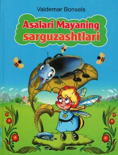

AMYosh asalari Mayaning qiziqarli sarguzashtlari va jasorati haqida ertak.
Valdemar Bonselsning bu mashhur asari yosh va qiziquvchan asalari Maya haqida hikoya qiladi. Maya sarguzasht davomida turli hasharotlar va qumursqalar bilan uchrashib, hayot haqida muhim saboqlar oladi. Qovog'arilar tomonidan asir olingan Maya o'z qirolichasini xavfdan ogoh etib, butun asalarilar oilasini qutqarib qoladi.